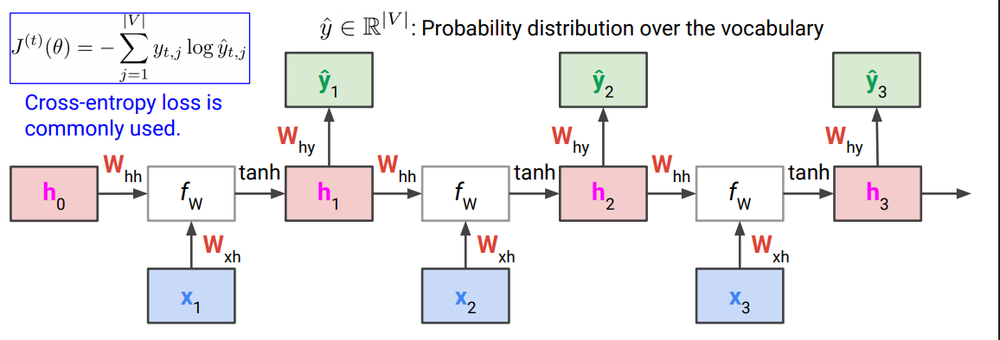

개요
참여중인 딥러닝 스터디 6주차 기록입니다.
5주차 과제 설명
Optimizer 비교 : SGD vs adam
adam이 1 epoch만에 SGD의 accuracy보다 높게 나옴
# SGD Epoch 1/5 1875/1875 [==========] - 6s 3ms/step - loss: 0.6548 - accuracy: 0.8358 ... Epoch 5/5 1875/1875 [==========] - 5s 2ms/step - loss: 0.2346 - accuracy: 0.9352 # adam Epoch 1/5 1875/1875 [==========] - 11s 6ms/step - loss: 0.2605 - accuracy: 0.9256 ... Epoch 5/5 1875/1875 [==========] - 7s 4ms/step - loss: 0.0456 - accuracy: 0.9863
Overfitting 케이스
- Test accuracy가 97.75%로 Train accuracy 98.63%보다 낮게 나옴
- 간단한 데이터이므로 overfitting으로 판단했지만, 실제로 1%의 차이는 거의 일어나지 않은 것 (실제로 일어나면 5%가까이 떨어지는 경우도 많음)
Overfitting 케이스 방지 : Dropout 추가
Dropout을 통해 여러 특징을 학습시킬 수 있도록 함 (뉴런을 적게쓰므로 1 epoch에서는 좀 더 낮음)
model2 = tf.keras.models.Sequential([ tf.keras.layers.Flatten(input_shape=(28,28)), tf.keras.layers.Dense(128, activation = 'relu'), tf.keras.layers.Dropout(0.2), # Dropout : 20%정도 Layer를 끈다 tf.keras.layers.Dense(10, activation='softmax') ]) ... Epoch 1/5 1875/1875 [==========] - 9s 4ms/step - loss: 0.2939 - accuracy: 0.9154 ... Epoch 5/5 1875/1875 [==========] - 6s 3ms/step - loss: 0.0725 - accuracy: 0.9772Test accuracy가 97.85%, Train accuracy 97.72% 로 Overfitting 줄어듦
Overfitting 케이스 방지 : Regularization
- 파라미터에 패널티를 부여해 Overfitting을 방지. 딥러닝에서는 잘 쓰이지 않음
tf.keras.regularizers.l2(0.01): \(\lambda\)값으로 0.01부여, 커질수록 강한 패널티
model2 = tf.keras.models.Sequential([ tf.keras.layers.Flatten(input_shape=(28,28)), tf.keras.layers.Dense(128, activation = 'relu'), tf.keras.layers.Dense(128, kernel_regularizer = tf.keras.regularizers.l2(0.01), activation = 'relu'), tf.keras.layers.Dense(10, activation='softmax') ])- Test accuracy가 96.70%, Train accuracy 97.81% 로 오히려 Underfitting 발생
- 파라미터에 패널티를 부여해 Overfitting을 방지. 딥러닝에서는 잘 쓰이지 않음
Overfitting 케이스 방지 : Early stopping
Early stopping 미적용model = tf.keras.Sequential([ tf.keras.layers.Dense(500, input_dim=2, activation='relu'), tf.keras.layers.Dense(1, activation='sigmoid') ]) model.compile(loss='binary_crossentropy', optimizer = 'adam', metrics = ['accuracy']) history = model.fit(trainX, trainy, validation_data = (trainX_2, trainy_2), # test데이터를 validation에 넣지 않는다 epochs=4000, verbose=0) >>> Train acc: 1.0, Test acc: 0.9142857193946838Early stopping without patience- EarlyStopping(monitor=‘val_loss’, mode=‘min’, verbose=1)
- Validation loss를 모니터링(accuracy가 떨어지면 멈추도록도 설정가능, 단 mode=max로), 가장 작은 min을 찾는다
fit할 때,callbacks=[es]를 추가로 설정
from tensorflow.keras.callbacks import EarlyStopping model1 = tf.keras.Sequential([ tf.keras.layers.Dense(500, input_dim=2, activation='relu'), tf.keras.layers.Dense(1, activation='sigmoid') ]) model1.compile(loss='binary_crossentropy', optimizer = 'adam', metrics = ['accuracy']) es = EarlyStopping(monitor='val_loss', mode='min', verbose=1) history = model1.fit(trainX, trainy, validation_data = (trainX_2, trainy_2), epochs=4000, verbose=0, callbacks=[es]) >>> Epoch 227: early stopping Train acc: 0.9666666388511658, Test acc: 0.8142856955528259 - Test accuracy가 81%로 낮아진 이유 : without patience옵션으로 underfitting이 발생
- 하단 그래프에서 x축 250정도 잠시 loss증가한 지점에서 멈춰버림

- 하단 그래프에서 x축 250정도 잠시 loss증가한 지점에서 멈춰버림
- EarlyStopping(monitor=‘val_loss’, mode=‘min’, verbose=1)
Early stopping with patience- EarlyStopping(monitor=‘val_loss’, mode=‘min’, verbose=1, patience=200)
- patience=200 옵션을 추가하여 200 epoch 동안
연속으로 loss증가하면 학습을 멈춤 - 나머지 코드 동일
>>> Epoch 922: early stopping Train acc: 1.0, Test acc: 0.9428571462631226 - patience=200 옵션을 추가하여 200 epoch 동안
- 기존의 227 epoch보다 늦은 922 epoch에서 멈춰, 훨씬 높은 94%의 Test accuracy
- EarlyStopping(monitor=‘val_loss’, mode=‘min’, verbose=1, patience=200)
train_test_split : 데이터를 나눌 때 무작위로 섞어서 나눌 수 있게 함
from sklearn.model_selection import train_test_split # train, test 나누기 x_train, x_test = train_test_split(X, test_size=0.3) y_train, y_test = train_test_split(y, test_size=0.3) print(x_train.shape, x_test.shape) print(x_train.shape, y_test.shape) >>> (70, 2) (30, 2) (70, 2) (30,) # train, validation 나누기 x_train, x_validate = train_test_split(x_train, test_size=0.3) y_train, y_validate = train_test_split(y_train, test_size=0.3) print(x_train.shape, x_validate.shape, x_test.shape) print(y_train.shape, y_validate.shape, y_test.shape) >>> (49, 2) (21, 2) (30, 2) (49,) (21,) (30,)Data Preprocessing(전처리)
- StandardScaler, MinMaxScaler의 약점 : outlier에 약하다
- 극단적인 데이터가 많지 않다면 적용해도 좋으며, 많다면 robustscaler도 고려
from sklearn.preprocessing import StandardScaler, MinMaxScaler # MinMaxScaler 적용 전 x print(x) >>> [[236.37372138 67.4728654 889.1062823 561.1353035 191.38532351] [746.36250159 92.35363502 128.54322612 108.49157384 353.10048148] [673.3844796 734.7410641 760.98411268 983.26464345 202.82746593] [803.57916563 79.26219033 691.56641875 860.20938727 637.68924843] [961.59849032 646.66721861 610.07133782 190.98379101 392.23091957]] # MinMaxScaler 적용 후 x : (x - min) / (max - min) scaler = MinMaxScaler() x_scaled = scaler.fit_transform(x) print(x_scaled) >>> [[0. 0. 1. 0.51744132 0. ] [0.70321479 0.03728751 0. 0. 0.36234312] [0.60258664 1. 0.831543 1. 0.02563756] [0.78210986 0.01766805 0.74027155 0.85932894 1. ] [1. 0.86800833 0.63312056 0.09430128 0.45001978]] # StandardScaler : (x - mean) / std
- StandardScaler, MinMaxScaler의 약점 : outlier에 약하다
6주차 수업정리
자연어처리 관련 기초적인 내용
시계열데이터(Sequential Data)
시계열데이터(Sequential Data) : 문장(순서를 가진 단어들), 영상, 주가, 태풍의 이동경로 등
(자연어처리도 시계열데이터의 하위분야 중 하나)기본적으로
Input - Output - 그 사이의 function을 파악하면 좋으며, 아래는 예시임- 태풍으로 인한 날짜별 피해액을 알고자 할 때 : Input도 Output도 시계열
- 태풍의 소멸시기 예측 : Input은 시계열이지만 Output은 single output
- 단어가 문법적으로 맞는지 : 시계열 문제
- 문장의 주제가 어떤 것인지(과학? 문학?) : single output
- 그림을 묘사하는 문장 생성 : 시계열이 아닌 Input과 시계열인 Output
Problem types 예시
- One-to-one : (Image classification) 숫자 이미지를 input으로 받아 정답 숫자를 output
- Many-to-one : (Frame → Class) 태풍의 이동경로, 속도를 input으로 하여 언제사라질지 output
- Many-to-many : (Frames → Classes) 태풍의 이동경로, 속도를 input으로 하여 날짜별 피해액 output
- One-to-many : (Image → Words. Image captioning) 고양이 사진을 input으로, 이에 대한 묘사 문장을 output
- Many-to-many : (Video → words. Video captioning) 5개 단어의 영어문장을 input으로, 3개 단어의 한글문장으로 output
Word Embedding
- 단어를 모델에 인식시키려면 숫자로 매핑하는 과정이 필요 (알파벳은 유니코드 등으로 표현이 되지만, 단어는 그렇지 못함)
- 숫자로 매핑하며 단어의 다양한 관계를 나타낼 수 있도록 벡터로 표현. 이를
Word Embedding이라고 함- 임의의 정수로 매핑할 때, 비슷한 단어일수록 숫자의 차이가 적게 만듦 (baby 12, boy 13, child 14와 같이)
- 다만 girl이라는 단어가 나온다면 문제가 생길 수 있음 (boy 옆에 이미 baby가 있음)
- 해결방법 : 벡터로 만든다. 자릿수를 늘려 표현할 수 있는 관계가 많아짐 (boy[13,14], girl[14,13]과 같이 정의하면 벡터간 거리가 같다)
- 다양한 관계로 나타낼 수 있도록 벡터로 표현하게 됨 (
Word Embedding) (참고로 GPT는 512차원이나 768차원정도 됨)
- 처음엔 랜덤한 벡터였지만, 학습할수록 벡터가 변경되어 단어간의 관계를 표현
Word2vec
- 가지고 있는 단어(토큰)를, 문장에 빈 칸을 두어 맞추게 함
- 예를 들어 5만 개의 단어 중 정답인 into가 들어오지 않으면 감점 후 다시 학습(5만가지의 Classification)
- Word2vec이 아닌, 단어(토큰)를 주고 주변의 단어를 맞추게 하는 방법도 있지만 요즘은 많이 쓰지 않는 추세
- 언어모델의 학습은, 예를 들면 위키피디아의 문장을 가져와, 문장에 빈칸을 만들고 빈칸의 단어를 정답으로 만든 뒤, cross entropy 측정 등 진행
- Word2vec학습을 마치면 단어의 관계를 묘사하게 됨
RNN
RNN을 활용한 감정분석 사례(Many-to-one)
RNN(Recurrent Neural Networks)이라는 딥러닝으로 시계열을 처리하는 기초적인 architecture 적용 (이미지와 달리 문장은 길이가 항상 바뀐다)- 랜덤한 \(h_0\)을 시작으로, 현재의 단어 \(x_1\)부터 더해가면 최종적으로 \(h_t\)에 모든 문장의 정보가 들어있음
- 현재의 단어 \(x_t\)와, 이전까지의 단어들 \(h_{t-1}\) 중 어떤 것을 더 많이 반영할지를 정하는 파라미터 \(W_hh\), \(W_xh\)
- 각 부분의 \(W_hh\), \(W_xh\)는 동일한 값 (
Shared parameter) 예를 들어 \(W_hh\)값이 다르다면 단어의 수만큼 \(W_hh\)가 필요하며, 문장길이가 바뀔 때마다 학습을 다르게 해야함 - Sigmoid함수를 통과하여 0.5를 기준으로 긍정/부정 등을 평가하여 감정분석하는 방식 적용
- Backpropagation(Chain rule)을 사용해 학습
RNN을 활용한 Many-to-many 적용케이스 (태풍의 날짜별 피해액 등)
- hidden state(\(h_1\))마다 예측(\(\hat{y}\))을 하고, 예측에 대해 실제값과 cross entropy비교 및 Backpropagation 
- Multi-layer RNN
- RNN의 장단점
- 장점
- Input(문장의 길이 등)이 다른 문제에 대해 대처가 가능
- Parameter share로 모델의 크기가 커지지 않게 됨
- (이론적으로) 마지막 step에는 모든 정보가 들어있게 됨
- 단점
- 느리다
Vanishing gradient(학습이 안됨) : 미분값이 0에 수렴하여 학습이 일어나지 않음 (↔︎ Exploding gradient)long-range dependency(장기기억 소실, 학습은 되지만 초반부는 잊음) : 문장 초반부의 단어는 0에 수렴하며 잊게되고, 후반부의 내용만 잘 전달됨
- 장점
LSTM(Long Short Term Memory)
- 장기기억을 잊는 문제를 해결하기 위해, 보존할 수 있는 (장기기억만을 담당하는)cell gate 추가 (RNN의 핵심적 아이디어를 조금 발전시킨 것)
- 문제
- 여전히
Vanishing gradient는 존재함 long-range dependency도 문장이 너무 길어지면 다시 발생
- 여전히
Transformer가 등장하며 잘 안쓰이게 되었음
GRU(Gated Recurrent Units)
- LSTM보다 간소화되었음
Transformer가 등장하며 잘 안쓰이게 되었음- 다만 LSTM이나 GRU 모두 선박이나 태풍의 이동경로 등의 작은 규모는 적용할만 함 (Transformer는 상당히 큰 모델임)
- 자연어는 Transformer 사용(위의 사례도 Transformer사용시 더 좋아짐)
Copyright © 2024 Kibok Park All rights reserved.